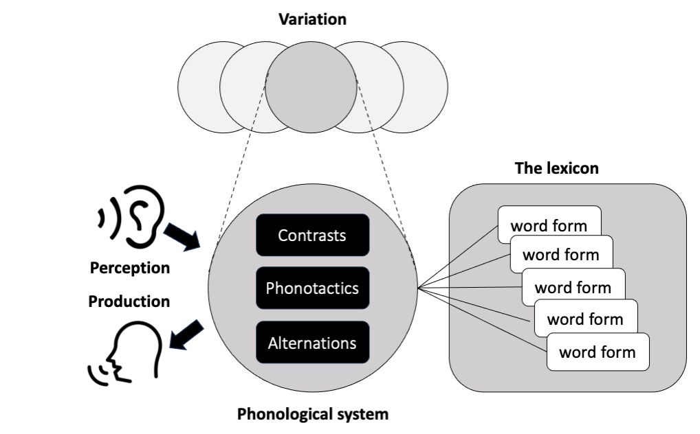
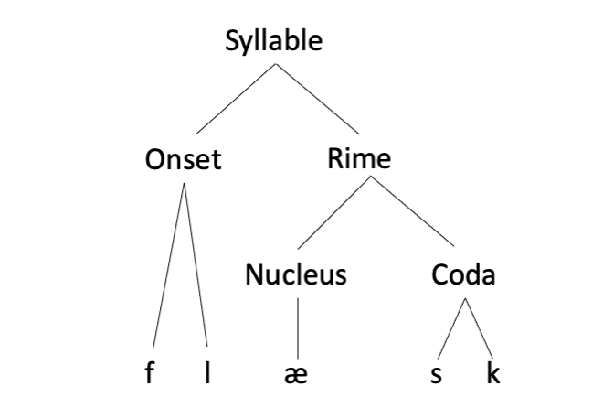
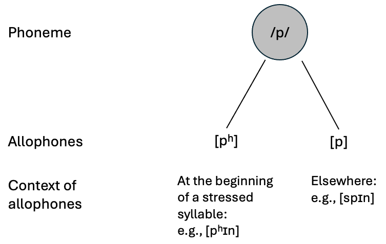
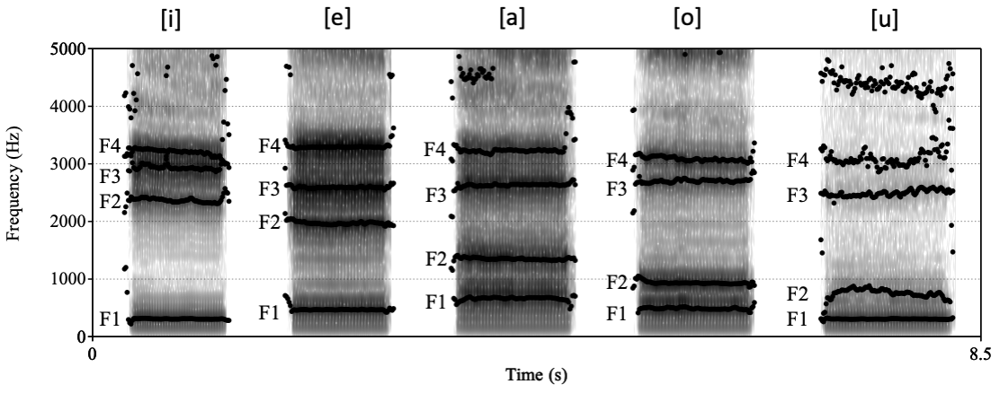
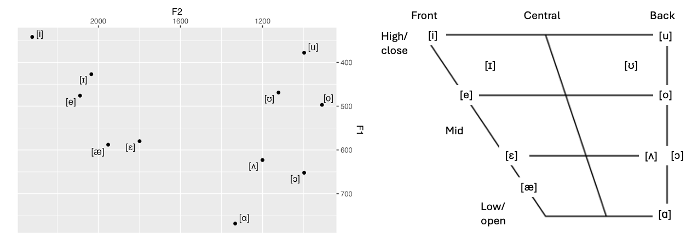
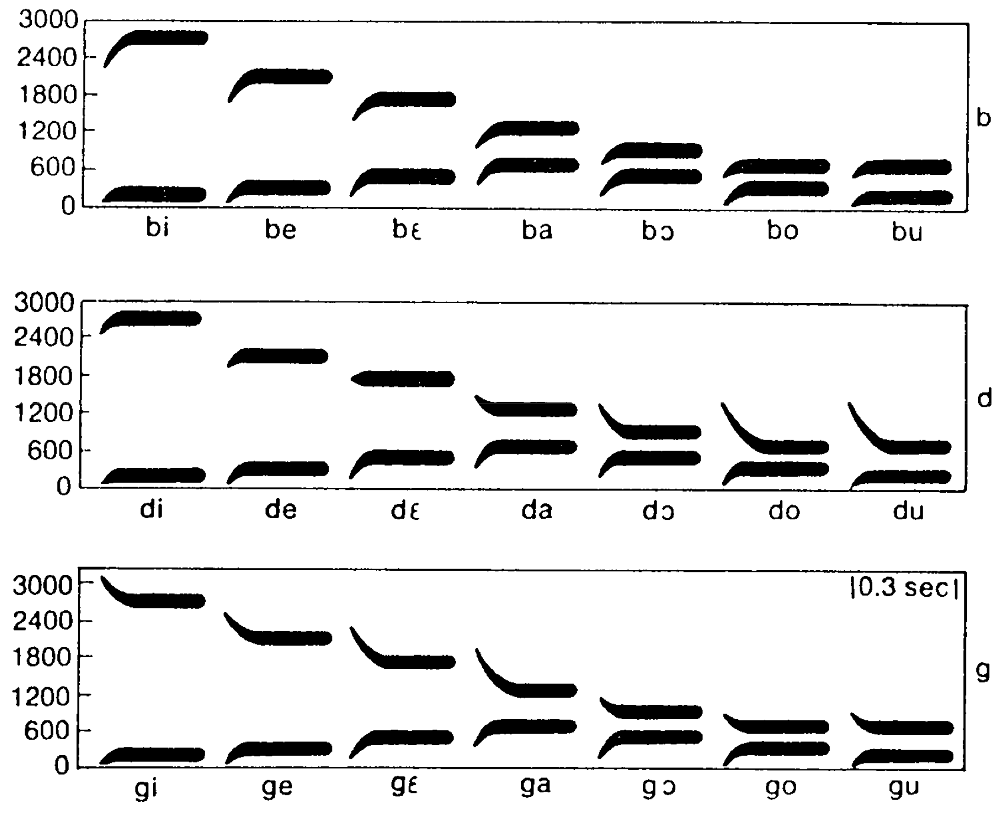
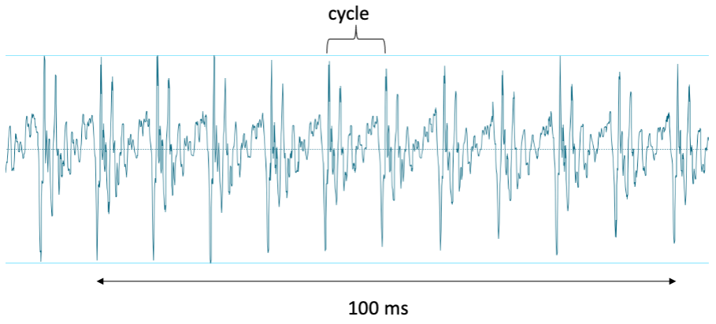
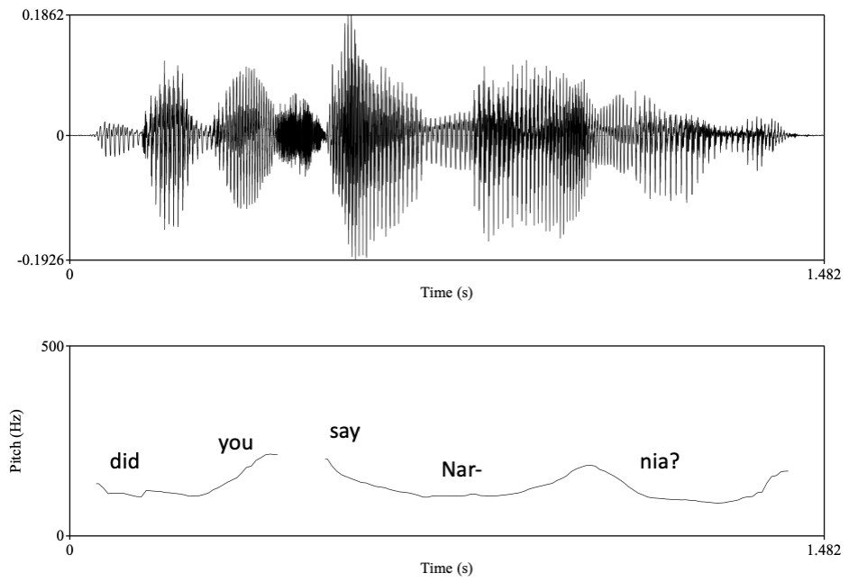

Chapter 1 Introduction
1.1 What is being learned?
This book is about how children learn phonology, the sound patterns of language. Each language has a system to organize, combine and structure speech sounds, and that is something that a child needs to learn. There are many aspects to this system, which can be classified into three broad components.
- Contrasts: Phonological contrasts refer to sound differences that can be used to indicate a lexical or grammatical distinction. For instance, in English, the sounds [b] and [p] differentiate words like bear and pear. Similarly, stress patterns can signal structural differences, such as the contrast between green hóuse (a green-colored house) and gréenhouse (a type of building that is not a house, nor necessarily green). These contrasts make up the building blocks of a phonological system.
- Phonotactics: This aspect of phonology concerns permissible sound patterns within a language. In English, the word pilt might not exist but it follows acceptable combinations of sounds, making it a possible word. Conversely, ptil does not conform to these patterns, so we say it is a phonotactically impossible word form in English. Made-up words like áraba and arába demonstrate potential stress patterns acceptable in English, whereas arabá does not. Such regulations govern the ways in which sound patterns are structurally organized within a language.
- Alternations: Alternations describe how the forms of words or morphemes change in different sound-related contexts. In English, the plural suffix ‘-s’ is realized as [z], [s], or [əz], depending on the last sound of the noun: [z] after dog, [s] after cat, and [əz] after horse. This patterned variation is another important property of phonology.
These three components—contrasts, phonotactics, and alternations—form the core of any language’s phonological system. But they manifest themselves differently across languages. Going back to the examples we have seen above, the contrast between [b] and [p] does not exist in Arabic. In Turkish, final stress as in arabá is standard, contrasting with English norms. A phonotactically possible word in English like pilt would be impossible in Cantonese, whereas a phonotactically impossible word in English like ptil is possible in Czech. In Turkish, the plural marker alternates between -lar and -ler depending on the last vowel of the noun (i.e., -lar after /a/, /o/, /ɯ/, /u/ and -ler after /e/, /i/, /y/, /œ/). One of the main goals of the study of phonological acquisition is to understand how children learn the specific contrasts, phonotactics, and alternations of the language they are exposed to.
That alone does not provide a complete picture of phonological acquisition, however. First, children must be able to hear or pronounce the different sounds and sound patterns. Without the ability to perceive the difference between [p] and [b], children would not be able to learn that they can distinguish spoken words, or that [spon] is a possible English word but [sbon] is not. Even if they can perceive the difference between /p/ and /b/, if they cannot produce it, they will not be able to make the distinction known to the listener. The ability to perceive and produce speech sounds is technically within the purview of phonetics—the study of speech sounds—rather than phonology, but to understand how phonology develops, we must also study how the perception and production of speech sounds develop.
There is another component that is missing from our discussion so far: knowledge of words. Strictly speaking, we could in principle know the phonology of a language without knowing any words of the language. To understand how this could be possible, imagine we have a computer program that contains all the contrastive sounds and sound patterns in English, including its phonotactic constraints and alternations, but that lacks any real vocabulary. If we enter /tɛlp/ and /tɛlb/ into the program, it will tell us that they are both possible and distinct word forms in English (although it has absolutely no idea whether they are actual words in the language) and that if they are nouns, their plural forms will be /tɛlps/ and /tɛlbz/, respectively. Most linguists would be happy to accept that such a program essentially “knows” the phonology of English. This thought experiment demonstrates that, conceptually, phonology can exist independent of the set of real words in a language, or the lexicon. However, if we are to study how children learn the phonology of a language, it is impossible to avoid also studying how and when they learn the sound forms of words, or word forms. Unlike computer programs, children must learn the contrasts, phonotactics, and alternations of the language out of something, and the word forms in the language must be an important source of information for that learning. Furthermore, it would be difficult to understand why a child may fail to recognize or produce the difference between two similar-sounding words, like bear and pear, unless we know what phonological information they have about these words. Perhaps the child simply does not know that the name of the fruit starts with [p]. How children learn the sound makeup of individual words and in what format they remember that information, what is called lexical representation, is also an integral part of the study of phonological acquisition.
The final aspect that needs to be taken into account in determining what phonology means from the perspective of learners is that children are not exposed to a single uniform system of sound patterns. There is variation. The most obvious case is children who learn two or more languages, perhaps because different languages are spoken by their caregivers or other members of the community. But even if the adults around them speak the same language, they may speak separate regional or social varieties that have different phonological systems. And even when the adults speak the same variety, they may switch between distinct registers (e.g., formal versus informal speech) depending on the social contexts. When children hear phonological differences, they need to first discern whether they belong to different languages, dialects, varieties, registers, or linguistically irrelevant variation, such as the speaker’s sex, age or just personal style. And then they need to construct knowledge that best deals with the variation, which may involve distinct phonological systems or a single system with built-in flexibility.
In summary, what needs to be learned when a child acquires phonology includes at least the following components:
- Contrasts: Understanding what counts as a different sound or sound structure in the language
- Phonotactics: Understanding how sounds can be combined in the language
- Alternations: Understanding when and how word forms change in the language
- Speech: Being able to perceive and produce distinct sounds
- Word forms: Remembering word forms so that they can be recognized and reproduced
- Variation: Understanding how and why phonological systems may differ
As illustrated in Fig. 1.1, the first three of these belong to the core of a phonological system. Children may have to learn a number of such systems depending on the specific linguistic situation they find themselves in, and know how and why they differ. If children are to acquire and use a phonological system, they also need to be able to perceive and produce speech sounds. They also need to learn and remember word forms in a way that allows them to recognize and produce the words in the language.

Figure 1.1: What needs to be learned when a child acquires phonology
1.2 What is learning?
Now that we have a basic idea of what needs to be learned about phonology, we can think about what it is that we wish to know about its process. When we say that a child learns the phonology of a language, we mean that they become like an adult speaker of that language with respect to their understanding of how sounds and sound patterns work in the language, the state summarized in Fig. 1.1. What we are interested, then, is the developmental process of how a child gets there. This process has two key aspects.
The first aspect is the course of development a child follows in becoming adult-like. This is the aspect that can be studied by asking questions such as “When does a child learn X?” or “What does a Y-year-old know about X?”. For instance, by examining what infants and children of different ages know about the contrastiveness of [b] and [p] in their language, we can describe how that knowledge changes over time and approximates a state that can be construed as the same as an adult speaker. This way, we gain a descriptive understanding of the timing and nature of changes that lead to an adultlike state. There are two layers of complexity when we try to answer these questions. One is that the knowledge and skills involved in learning a phonological component are multifaceted. Understanding the contrastive nature of the sounds [b] and [p]—if indeed they are contrastive in the language being learned—involves being able to discriminate the sounds, being able to produce the difference, knowing that they matter to known words (e.g., a bear is not a pear), knowing that they matter to unknown words (e.g., if blont were a word, it would be different from plont) and so on. These facets are likely to be learned at different times, so there will not be a single answer to the question “When does a child learn that [b] and [p] are contrastive sounds in language X?”. Another layer of complexity is that even a single facet of phonological knowledge or skills is not learned instantaneously. Instead, the process can be long and winding, sometimes changing in a direction away from, not toward, the adultlike pattern. To mention one example, English-speaking children’s perception of [b] and [p] undergoes a gradual change that continues throughout childhood and into adolescence. In some children, the production of [b] and [p] becomes less adult-like after a period of more adultlike realization, before it becomes adult-like once again.
The second aspect of learning we need to understand is what enables a child to become adult-like. This is the aspect that can be studied by asking questions such as “How does a child learn X?” or “What explains the change from one developmental phase to the next?”. For instance, how does a child exposed to English come to understand that [b] and [p] are contrastive in the language? To answer such a question, we need to know what type of information or evidence may be available in the linguistic environment (e.g., Is there any acoustic pattern that indicates that [b] and [p] are different categories in the language?). We also need to know what perceptual, physiological, and cognitive abilities infants and children are equipped with in order for them to process that information (e.g., Can infants hear and remember the acoustic information that matters to the status of [b] and [p]?). And we need to know what other aspects of language they have learned so far (e.g., Might infants remember some word forms that suggest [b] and [p] belong to different categories?). Note that these contributors are interdependent. What information an infant can use in the linguistic environment is dependent on what they can phonetically perceive. And what they can do with the information they can perceive is dependent on their cognitive capabilities to link that information to linguistic functions. This interdependence is also dynamic because each of the contributors is also undergoing change or development, constantly modifying the nature of its relationship with other contributors. In order to navigate this complicated landscape of development, researchers often propose learning mechanisms, or ways in which a certain aspect of language could be learned under a set of assumptions about the learning environment and the abilities/skills that the learner has at that point of development. For instance, we might hypothesize that infants of a certain age (say, 6 months) can perceive and remember acoustic information in the ambient speech which can reveal whether the language differentiates [b] and [p] and that infants of the same age also have some type of cognitive capacity to use that information to conclude that [b] and [p] are contrastive. By working out the details of such a learning mechanism and then testing predictions that follow from the hypothesis, we can accumulate explanations that account for how children are able to learn the phonology of their language.
To understand the development of a child’s phonological system from a nascent to an adultlike state, we need to study both of these aspects: how children’s knowledge and skills of phonology change over time and what explains the changes that occur. In other words, we must chart the timeline of development and identify the enablers of learning. In the chapters to follow, we will be doing exactly that.
1.3 How do we find out?
How do we find out what children know about phonology at different ages? And how do we examine what learning mechanisms are involved in the process? When it comes to children, especially infants, most of the usual approaches to tap into adult speakers’ knowledge of phonology will not work. Young children do not reveal whether they can hear the difference between two sounds by pressing buttons on a computer or tell us whether a made-up word is a possible word form in the language. To study the phonological knowledge and skills of young learners, researchers have developed a range of techniques that do not rely on the types of responses that can only be expected of older speakers. In this section, we will have a brief look at some of the basic principles behind these research methods. Details of the specific methods will be described in later chapters, as it will be easier to understand the motivations behind them in the relevant research context.
1.3.1 Production
One obvious way to study children’s phonology is to examine their speech production. This can be done most straightforwardly by recording children’s spontaneous speech in everyday contexts. The advantage of this approach is that it can be used as soon as infants begin to produce speech and also as often as needed, enabling researchers to collect data from the same individuals over a period of time (i.e., longitudinally). The main disadvantage is that we do not have much control over the distribution of the data that we collect. Suppose, for instance, that we are interested in examining children’s production of [b] and [p]. We can record children producing words such as ball, bad, big, pig, push, and puppy, which can then be transcribed or acoustically analyzed. But when we depend on spontaneous production, there is no guarantee that the data we obtain will be balanced in its coverage. We may end up with many [b]-words and very few [p]-words, or a lot of data from some children but only a few from others. Most of the [b] tokens may come from the word bad for one child, but from big for another. These types of imbalance in the data make reliable comparisons challenging. Another issue is that it is not always clear what the target word is. A child might say [baː] in the presence of a ball. If that happens consistently, we can be reasonably confident that that is the child’s rendition of ball. But sometimes transcribers (and even parents) are unsure what word the child is trying to say. Despite these limitations, analysis of spontaneous speech remains the mainstay of phonological production research for children under the age of 2 years, who are less inclined to provide speech production data in another way.
To avoid the limitations of spontaneous speech data, researchers studying older children use elicited speech production. Specific words or phrases can be elicited by using visual cues (such as a real ball or a picture of a ball) or by simply asking children to repeat after the researcher (a procedure sometimes called immediate repetition or imitation). In this way, we can be fairly certain about what words/phrases are being targeted and ensure that enough tokens are collected from different types of forms we are interested in. We can even elicit forms for made-up words (nonwords or novel words). This technique is often used to examine children’s ability to remember and reproduce forms they have never heard before (nonword repetition) or their ability to generate phonological alternations in morphologically complex forms. One well-known procedure of the latter type is called a wug test, named after one of the novel words used in the original study by Berko (1958). In a wug test, children are shown pictures depicting meanings of novel words (e.g., a bird-like creature called a wug), and given a prompt that elicits a morphologically different form of the word (e.g., “This is a wug. Now there are two of them. There are two …”? “Wugs!”).
Recent technological advancements mean that we can now study articulatory details of children’s speech production noninvasively using ultrasound. A portable medical ultrasound scanner placed under the chin captures visual images of the tongue movement. While this technology has been used primarily by clinicians to provide real-time visual feedback of articulation to children with speech sound disorders, it is increasingly used to study articulatory development in typically developing children from the age of 3 years.
1.3.2 Discrimination
Receptive skills, such as perception and recognition, are often studied using one of the two basic types of cognitive ability: discrimination and identification. Broadly speaking, discrimination refers to the ability to differentiate distinct types of stimuli. In speech perception, discrimination tasks are used to examine infants’ or children’s ability to detect the difference between acoustically different auditory tokens (e.g., /ba/ and /pa/). Because we cannot ask infants if they can “hear the difference” between tokens such as /ba/ and /pa/, researchers look at other signs, which can be physiological (e.g., heart beat rate, pupil size), behavioral (e.g., eye-gaze, head-turn, pacifier sucking), or neural (e.g., electric activities or the amount of blood flow in different regions of the brain). A general principle that underlies many of the related methods is that when an infant or child detects a difference between two types of auditory samples that are played repeatedly, a change or difference can be observed in one of these measures. Methods that operate on this principle includes the High Amplitude Sucking Procedure, Visual Fixation Procedure, Headturn Preference Procedure, electroencephalography (EEG). We will look at the details of these techniques in the subsequent chapters. Another principle that is employed in some laboratory experiments is that when infants learn that a change in auditory stimuli is always followed by an interesting event (such as a moving toy appearing in a box), they can be conditioned to demonstrate their detection of the change through anticipatory behaviors (such as turning their head toward the box with the interesting toy when the sound changes). The (Operant-)Conditioned Heardturn Procedure is a representative method that uses this principle.
These principles can be extended to the study of learners’ sensitivities to forms that differ in their phonological status. For instance, if we are interested in examining whether infants can discriminate between phonotactically possible and impossible forms, we can expose English-learning infants to a set of audio-recorded novel words that follow English phonotactics (e.g., pilt, spob) and a set of novel words that do not (e.g., ptil, zbob) and measure their eye-gaze or head-turn patterns to see if they respond differently. Similarly, they can be used to test whether learners recognize word forms that they may already know or have been pre-exposed to in an experiment. For example, if infants can remember hearing some novel words (e.g., pilt) played to them during a familiarization phase of an experiment, they should respond differently when they later hear the same words as opposed to other novel words.
1.3.3 Identification
Identification refers to the ability to map one type of stimulus to another. Identification tasks are most commonly used to test whether children know the mapping between word forms and their meanings. This usually involves presenting two visual stimuli (e.g., pictures of a bear and a pear) and an auditory prompt (e.g., “Where is the pear?”), based on the simple principle that a child should look at the visual stimulus matching the auditory one if they know the association. Such a task can be used not only to gauge their knowledge of sound-meaning mappings but also the speed at which they can process the critical phonetic difference in relation to the meaning. Matching can be measured by simply asking children to point at the corresponding visual stimulus, but with younger children who are not capable of understanding the task, it can be measured by observing how long they look at the corresponding visual. This is how the Preferential Looking Paradigm works. A more subtle way to study identification is to exploit the response children show when their expectations are violated. For example, children can be presented with a word-object pair that violates mappings that they are trained on or already familiar with (e.g., bear = fruit ). If they notice this anomaly, their surprise should be manifested in some measure (e.g., larger pupil, longer look, a certain pattern of brainwaves). The Switch Task is an experimental method that uses this principle.
1.4 Some key concepts in articulatory phonetics and theoretical phonology
This book assumes basic knowledge of articulatory phonetics and theoretical phonology, including the key concepts listed below. If you are already familiar with these, feel free to skip this section. If some of them are new to you, the explanations should give you quick footholds to read ahead.
- Consonants and vowels comprise phonological units called segments.
- Consonants can be described phonetically on the basis of three primary articulatory dimensions: voicing (e.g., voiced, voiceless), place of articulation (e.g., bilabial, alveolar, palatal, velar), and manner of articulation (e.g., plosive or oral stops, fricatives, nasals).
- Vowels can be described phonetically on the basis of two dimensions of the tongue position: height (e.g., high, mid, low) and backness (e.g., front, back). In addition, they can be distinguished based on whether the tongue is positioned near the center (i.e., lax) or periphery (i.e., tense) and whether the lips are pursed (i.e., rounded) or not (i.e., unrounded).
- In this book, we will use the International Phonetic Alphabet (IPA) enclosed in square brackets to present phonetic descriptions of segments, as in [θɪk] for a typical pronunciation of the English word thick. A complete set of IPA symbols is available in the Appendix of the book.
- Consonants and vowels are grouped into a unit called the syllable. A syllable consists of a nucleus (typically a vowel) and optionally, one or more consonants that precede the nucleus. The position of these consonants is called the onset. Some languages also allow one or more consonants after the nucleus. The position of these consonants is called the coda. The nucleus and the coda make up a unit within the syllable called the rime (sometimes spelled rhyme). Fig. 1.2 shows the structure of the syllable that corresponds to the word flask [flæsk].
- Phonetic differences that distinguish words or morphemes (subcomponents of words) are said to be contrastive or distinctive. The consonants [θ] and [s] contrast in the words thick [θɪk] and sick [sɪk], and the vowels [ɛ] and [ɪ] contrast in the words bed [bɛd] and bid [bɪd]. Such pairs of words that differ by only one sound in the same position are called minimal pairs, and are the most straightforward way to demonstrate the contrastiveness of two sounds in a language.
- Some phonetic differences are predictable from the phonological context in the language. In English, the bilabial voiceless stop is aspirated (produced with a puff of air) at the beginning of a stressed syllable, as in pin [pʰɪn], but otherwise unaspirated, as in spin [spɪn]. Because the aspirated sound and the unaspirated one cannot occur in the same position, they can never be contrastive. Such sounds are said to be allophones, phonetic variants of the same phonological unit. This phonological unit is called a phoneme. In other words, a phoneme is an abstract segmental unit that is contrastive in the language and can be phonetically realized as one of its allophones (see Fig. 1.3). In this book, I will follow the convention of using slashes when a phonetic symbol is used to represent a phoneme (e.g., /p/).
- Not all contrasts are about segments such as consonants and vowels. There are contrasts that involve phonetic differences superimposed on segments, such as stress, tone, and intonation. The phonetic features relevant to these contrasts are sometimes called suprasegmentals, but in this book, I will use the term prosody or prosodic phonology to refer to this aspect of phonology. Prosodic contrast can be lexical: it may mark differences in words, as is the case with the different tones in Mandarin. Or it can be nonlexical or postlexical: it may mark differences in grammatical structure, pragmatics, information structure (e.g., what is emphasized), as is the case with intonation in English.

Figure 1.2: The syllabic structure of ‘flask’ [flæsk].

Figure 1.3: Phonemes and allophones. A phoneme is a unit of contrast. Allophones are phonetic variants of a phoneme.
1.5 Some key concepts in acoustic phonetics
We can learn a lot about how speech is perceived and produced by studying aspects of acoustic signals that can be instrumentally measured. Some acoustic features of speech have been particularly useful in studying the development of speech in infants and children. Here are three of them that you will be hearing about frequently.
1.5.1 Voice Onset Time (VOT)
Simply put, voice onset time (VOT) is the time lag between the release of a consonant and the beginning of voicing. To understand this more technically, let us look at Fig. 1.4, which shows waveforms of two syllables with a bilabial stop (such as [p] and [b]) followed by the vowel [a]. At the left end of each speech wave, we can see a little blip, which is called a release burst. Just before we articulate a sound like [p] and [b], our lips are closed and the air pressure is building up in the oral cavity. The release burst is produced when the lips come apart from the closure, releasing a puff of air. The same principle applies to the release of any other type of closure, such as alveolar (the tongue tip pressed against the alveolar ridge) or velar (the tongue body pressed against the soft palate). To the right of the release burst in the figure is a body of regular waves called laryngeal pulsing, as it is caused by the vibration of the vocal cords when the vowel is produced. The VOT is the interval between the release burst and the onset of the laryngeal pulsing, which is 10 ms in the top waveform and 50 ms in the bottom one.

Figure 1.4: Waveforms of synthesized speech with a VOT of 10 ms (top) and 50 ms (bottom).
VOT is one of the main acoustic signals of voicing. Adult English speakers would perceive these samples as /ba/ and /pa/, respectively, because a short VOT such as 10 ms corresponds to the English voiced stop /b/, and a long VOT such as 50 ms corresponds to the voiceless /p/. The typical VOT values for voiced and voiceless sounds depend on the point of articulation and differ across languages. VOT can be used to examine how infants perceive phonetic differences that map onto a voicing contrast and whether children produce voicing in a similar way to adult speakers.
1.5.2 Formants (F1, F2 etc.)
Speech is a complex sound that consists of many components with different frequencies (numbers of waves a sound makes within a given time unit). When a complex sound like speech is produced in a confined space, such as the human vocal tract, some frequencies become emphasized, or resonant, due to the shape of the space. As a result, speech sounds tend to have bands of frequencies where the signal is stronger than other frequency ranges. These bands are known as formants. Formants can be visualized by using a spectrogram, whose x-axis presents time, y-axis shows frequency, and darkness indicates the amplitude (“loudness”) of the specific frequency. Fig. 1.5 is a spectrogram for five vowels, /i/, /e/, /o/, /a/ and /u/. The formants are visible as dark stripes. The formant with the lowest frequency is called the first formant (or F1), the next lowest the second formant (or F2), and the next one the third formant (or F3), and so on.

Figure 1.5: Spectrograms of five vowels. The dark horizontal strips are formants. The black dots represent peaks in frequency intensity, which are usually used to identify the position of a formant.
Formants are important in acoustic phonetics because they reflect the shape of the vocal tract defined by the position and configuration of the tongue, the spreading or rounding of the lips, etc. In particular, our perception of vowels is largely determined by the formants, especially F1 and F2. Generally speaking, F1 is higher in low vowels than high vowels, and F2 is higher in front vowels than back vowels. An intuitive way to capture this relationship between formant values and articulatory characterization of vowels is to draw a formant figure for vowels with an x-axis showing F2 with its value increasing leftward and a y-axis showing F1 with its value increasing downward (Fig. 1.6, left). This makes the figure spatially mirror an articulatory vowel diagram like the one we find in an IPA chart, where the left side of the figure corresponds to the front side of the mouth and the top side of the figure corresponds to the top of the vocal tract (Fig. 1.6, right).

Figure 1.6: An acoustic vowel space plotting the mean F1 and F2 values of English vowels produced by midwestern men in the U.S. (Hillenbrand et al., 1995) (left) and the same vowels from the IPA vowel diagram based on the position of the tongue during articulation (right).
Formants also play a critical role in acoustically marking consonants. As you can see in Fig. 1.7, consonants modify the formants of the neighboring vowels. They typically lower the F1 regardless of the point of the articulation. Labial consonants also lower the F2, while velar consonants raise the F2. Alveolar consonants cause the F2 to be closer to 1800 Hz. The change in formant values seen between a consonant and a vowel is called a formant transition. Formant transitions are one of the main sources of acoustic information (or cues) that listeners use to perceive the place of articulation in consonants.

Figure 1.7: Schematic formant transition patterns for voiced stops to vowels. The higher stripes show transitions in F2, and the lower stripes, transitions in F1. Source: Delattre et al. (1955)
In Chapters 2 and 3, you will come across many studies on early speech perception and production that use formants to manipulate experimental stimuli and phonetically characterize early speech production.
1.5.3 Fundamental frequency (F0)
When speech sounds are produced with normal voicing, the vocal folds vibrate in a manner that creates a periodic waveform. Fig. 1.8 shows the detail of such a waveform for the vowel /a/ produced by a male speaker. While the shape of the wave is complex, we can see that it consists of a cycle, a pattern that repeats itself. How frequently this cycle is repeated is known as the fundamental frequency (F0, ‘eff zero’ or ‘eff nought’). For example, a vowel that has a cycle repeating 100 times a second is said to have an F0 of 100 hertz (Hz).

Figure 1.8: Detail of a waveform for the vowel /a/. The recurrent pattern that is marked is the cycle. This cycle is seen 10 times in 100 ms, so it will have repeated itself 100 times in 1,000 ms or 1 second, making the F0 of this vowel 100 hertz.
F0 is a key measure in acoustic phonetics because it is closely linked to our perception of pitch—the quality of sound that is judged to be “higher” or “lower” in the musical sense. The pitch of a speech sound is perceived to be higher as the F0 increases. As such, F0 is frequently employed in research on tone and intonation, which both use pitch as the main phonetic parameter. Measures of F0 are often accompanied by or superimposed over a waveform or spectrogram, as shown in Fig. 1.9.

Figure 1.9: Waveform (top) and F0 (bottom) of the utterance ‘Did you say Narnia?’. The F0 track captures the intonation pattern that is perceived as a movement in pitch. The gap around the sound /s/ is due to the lack of voicing in that sound.
1.6 Organization of the chapters
The remainder of this book consists of eight chapters, each looking at a different aspect of phonological acquisition, such as segmental contrasts, phonotactics, and alternation. In most cases, both perception and production are discussed in the same chapter, so that the relationship between the two becomes more obvious than if they were introduced in separate chapters. But because the development of prosodic phonology differs from that of segmental phonology in several respects, it is treated in a different chapter, and the rest of the book mostly reviews findings for segmental phonology. In Chapter 2, the focus will be on the speech capacities of infants during the first half year of life. Chapter 3 examines how infants come to learn segmental contrasts in their language. Chapters 4 and 5 address the learning of word forms, which, although not strictly about phonology proper, is closely related to the learning of phonological contrasts and phonotactics. Chapter 4 discusses how word forms are recognized, and Chapter 5, how they are produced. Chapters 6 and 7 turn to the other two core aspects of phonology: phonotactics and alternations. The topic of Chapter 8 is the learning of prosodic phonology, in particular, lexical tone, intonation, and stress. The final chapter, Chapter 9 deals with issues related to the linguistic environment of phonological acquisition, including the learning of two or more languages, dialectal and other types of sociolinguistic variation, as well as the role of the speech addressed to infants and children.
I have followed an order that makes sense in terms of how development unfolds chronologically, how the understanding of materials depends on each other, and which aspects of phonology are likely to be more familiar to the reader. But I have also tried to make the chapters complete in themselves so that they can be read on their own as required.
1.7 Further readings and resources
- Useful overviews of experimental methods used in studying phonological development in infants and toddlers include Jusczyk (1997), E. K. Johnson & Tyler (2010), and Chapter 13 of Lust & Blume (2016).
- The phonetic symbols used in this book are from the International Phonetic Alphabet, a chart of which is reproduced in the Appendix.
- There are many excellent introductory-level textbooks on phonetics and phonology. A highly accessible introduction to phonetics that covers both articulatory and acoustic phonetics is Ladefoged & Disner (2012). User-friendly introductions to phonology include Hayes (2010) and Gussenhoven & Jacobs (2024).